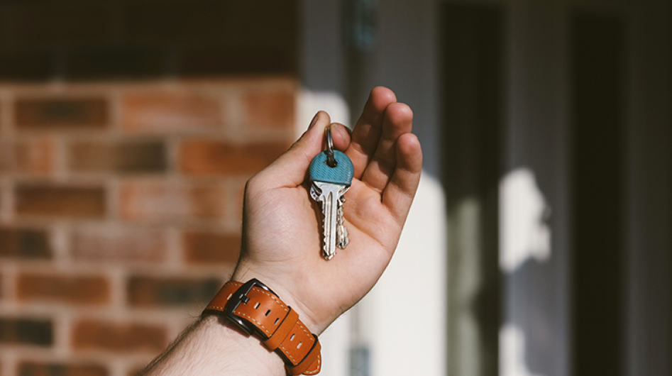

СМИО НАС
Назад к СМИ
Другие новости
Где лежат ключи от «рая»?
Тенденции в загородной недвижимости Казани устремляются в цивилизованное русло: времена «Шанхая» с хаотичной застройкой прошли, отмечают эксперты. И сегодня покупатель готов переплатить и 30% выше рынка, лишь бы поселиться в коттеджном поселке со своей философией, строго выдержанной концепцией и развитой инфраструктурой. Так где же находятся эти «райские» места, где комфорт и безопасность соседствуют с респектабельностью, — читайте в нашем обзоре коттеджных поселков Казани.
«Изумрудный village»: чужие здесь не ходят
В Казани практически нет мест с красивым видом на наш тысячелетний
город, поэтому каждый, кто приезжает в поселок премиум-класса
«Изумрудный village», изумляется панорамой, которая открывается
перед ним. Помимо вида с возвышенности на город, вас встречает
обособленная и круглосуточно охраняемая территория с
видеонаблюдением на 40 частных домов в 25 минутах от центра
татарстанской столицы.
Кроме абсолютной безопасности, жители поселка получают
эксклюзивный комфорт: теннисный корт, многофункциональную
спортивную площадку, тематические детские площадки и «тропу
здоровья», где вы на утренней пробежке можно зарядиться энергией
на весь день.
Расположение: в Приволжском районе Казани, по соседству с ЖК
«Изумрудный» и поселком Салмачи.
Застройщик: компания WIN DOM.
Особенности: Асфальтированная дорога до поселка и внутри него,
централизованное электро-, водо-, газоснабжение, переливной
индивидуальный септик 2 линии по три кольца, интернет, телефония
4G. Двухэтажные дома из керамического кирпича с базальтовым
утеплением в стиле современной классики площадью от 100
«квадратов» строятся с учетом пожеланий будущих владельцев.
Чем привлекает: Полная предчистовая отделка под ремонт делает
процесс новоселья легким и приятным. В домах установлена система
отопления с теплыми полами, радиаторами и газовым котлом,
выполнена стяжка пола и штукатурка стен под обои. Останется только
постелить ламинат или плитку, поклеить обои и натянуть потолок.
Обитатели поселка смогут сами участвовать в благоустройстве
территории и контролировать все расходы — застройщик поможет
организовать собственное ТСЖ, которое займется вопросами уборки,
поддержания порядка и оплаты коммунальных платежей.
ПОДЕЛИТЬСЯ
На рынке новый тренд – свой дом в черте города
На пути к расцвету субурбии: что ждет рынок ИЖС в 2021 году?
Жилье для счастливой жизни: успех кроется в мелочах